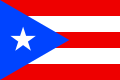

| Inicio | Discografia | Registrarse |
|---|
| Michael Anthony Torres Monge (San Juan, 15 de enero de 1994), conocido artísticamente como Myke Towers, es un cantante y compositor puertorriqueño de reguetón y trap latino. Él es un artista nominado a un Grammy Latino2 y fue reconocido como el Nuevo Artista del Año por los Billboard Latin Music Awards en 2021.3 Hasta la fecha, Towers ha lanzado 5 álbumes de estudio y es codirigido por One World International y S10 Entertainment. | |
|
| Nació el 15 de enero de 1994 en Río Piedras, una antigua localidad que ahora pertenece a San Juan, Puerto Rico. Desde temprana edad demostró interés por la música. Inspirado por el rap de la década de 1990, comenzaría a practicar freestyle de manera independiente y posteriormente a grabar varios demos. |  | |